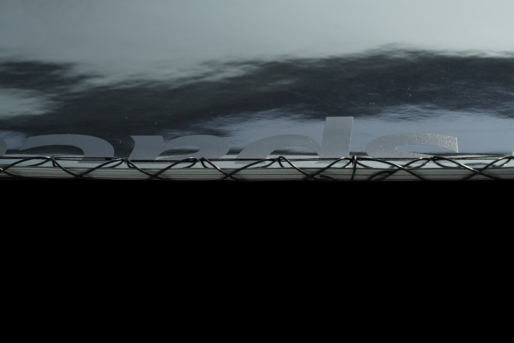
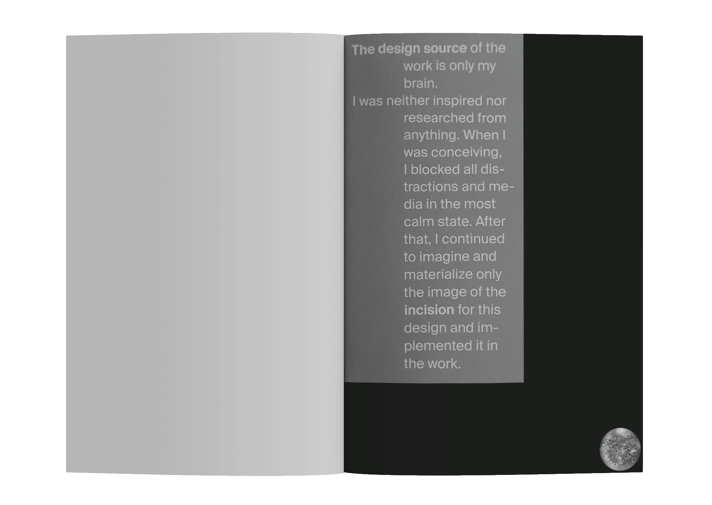
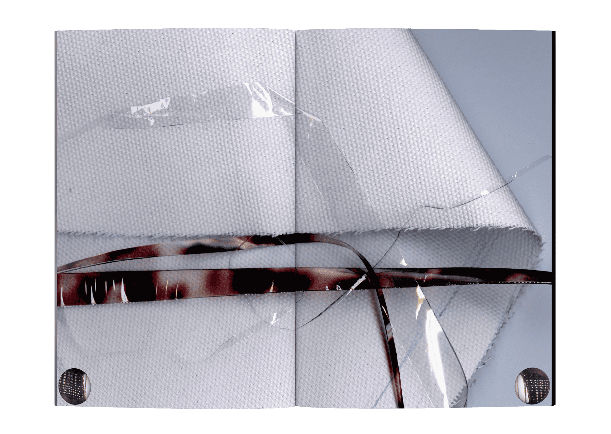
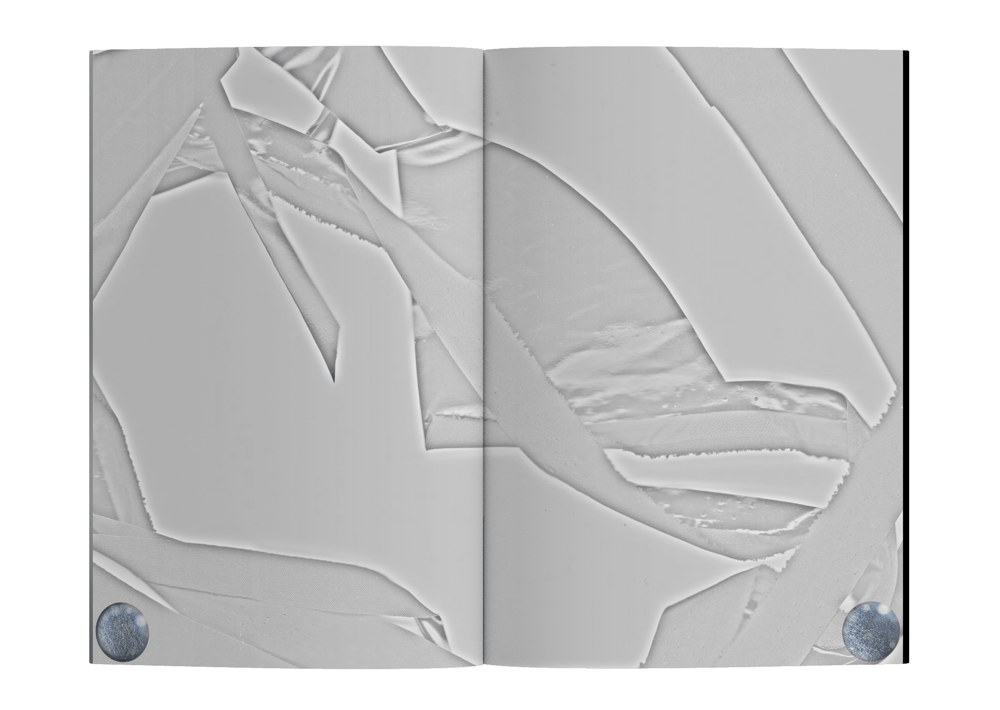
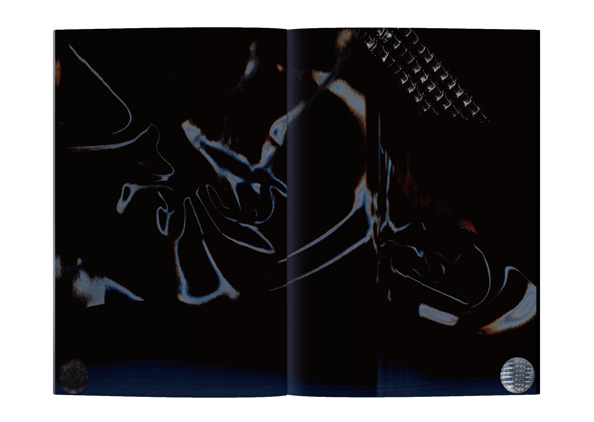
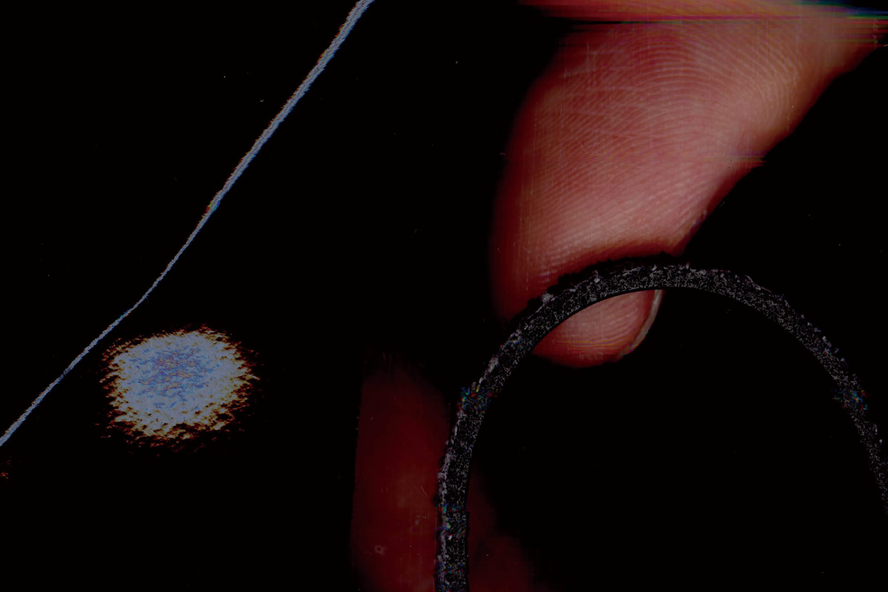

Rip space

박찬윤의 작품〈Rip space〉가 추구하는 바를 이어받아, 재료의 물성을 드러내는 책을 디자인했습니다. 의상에 사용되고 남은 폐기 재료를 스캔해 새로운 조형으로 재조명하며, 본 전시에서 말하는 오뜨꾸뛰르의 맥락을 부여했습니다.






박찬윤의 작품〈Rip space〉가 추구하는 바를 이어받아, 재료의 물성을 드러내는 책을 디자인했습니다. 의상에 사용되고 남은 폐기 재료를 스캔해 새로운 조형으로 재조명하며, 본 전시에서 말하는 오뜨꾸뛰르의 맥락을 부여했습니다.




